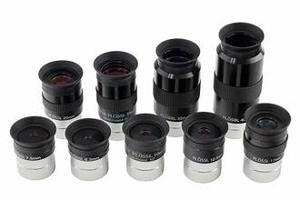

Introduction
Astrophile Sam (Shubham Gupta) – an amateur astronomer with an insatiable love for the cosmos.
Since childhood, I have been captivated by the night sky, spending countless hours gazing at the stars, lost in the wonders of the universe. The vastness of space, with its infinite galaxies, planets, and celestial mysteries, has always fascinated me, igniting a passion that has only grown stronger over the years.
I remember my earliest nights of stargazing, filled with dreams of visiting other planets, touching the surface of the Moon, and uncovering the secrets of the cosmos. As I grew older, I realized the challenges of space travel, but rather than diminishing my passion, this understanding deepened my curiosity. I turned to telescopes, books, and scientific exploration, determined to bring the universe closer to me.
Every clear night sky is an opportunity for discovery. Whether observing the Moon’s craters, tracking planetary movements, or searching for deep-sky objects, I find immense joy in exploring the heavens. My telescope is not just an instrument; it is my window to the cosmos, a bridge between my curiosity and the vast expanse beyond.
Beyond mere observation, my love for astronomy extends to the science behind celestial phenomena—how stars are born and die, how galaxies evolve, and how the universe itself came into existence. My academic journey in physics and astronomy is not just about learning facts; it is about understanding the grand cosmic design.
For me, the night sky is more than a spectacle—it is a lifelong adventure, a source of inspiration, and a reminder of the boundless wonders that lie beyond our world.

Materials Used ⬇️
To build my telescope, I used the following essential materials:
- üîπ **Primary Mirror (127mm)**
- üîπ **Eyepiece (10mm & 25mm)** 
- üîπ **PVC Pipe (for the Optical Tube)**
- üîπ **Dobsonian Mount (Wooden Base)**